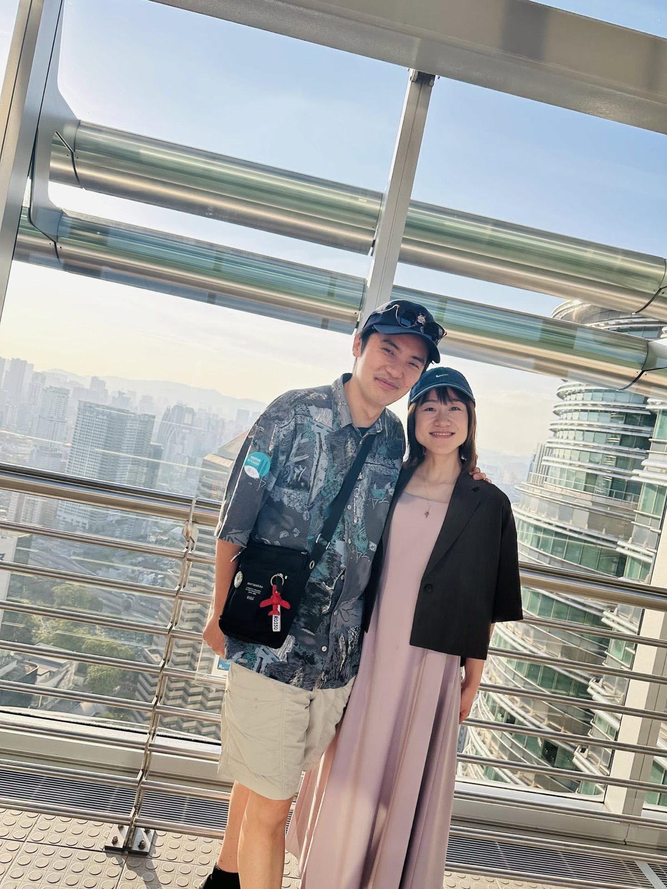
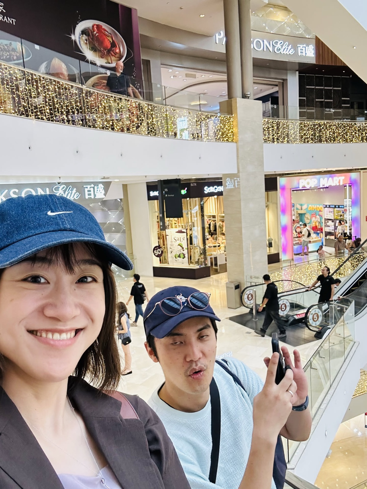
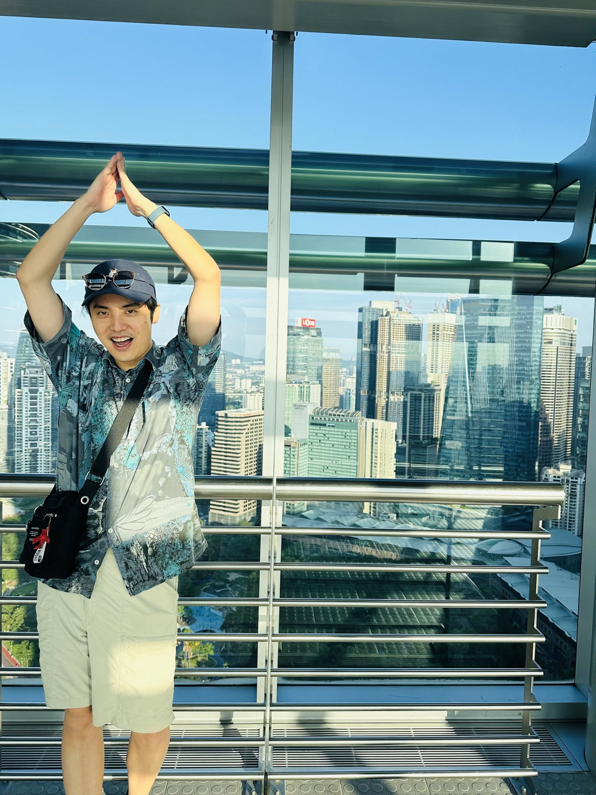
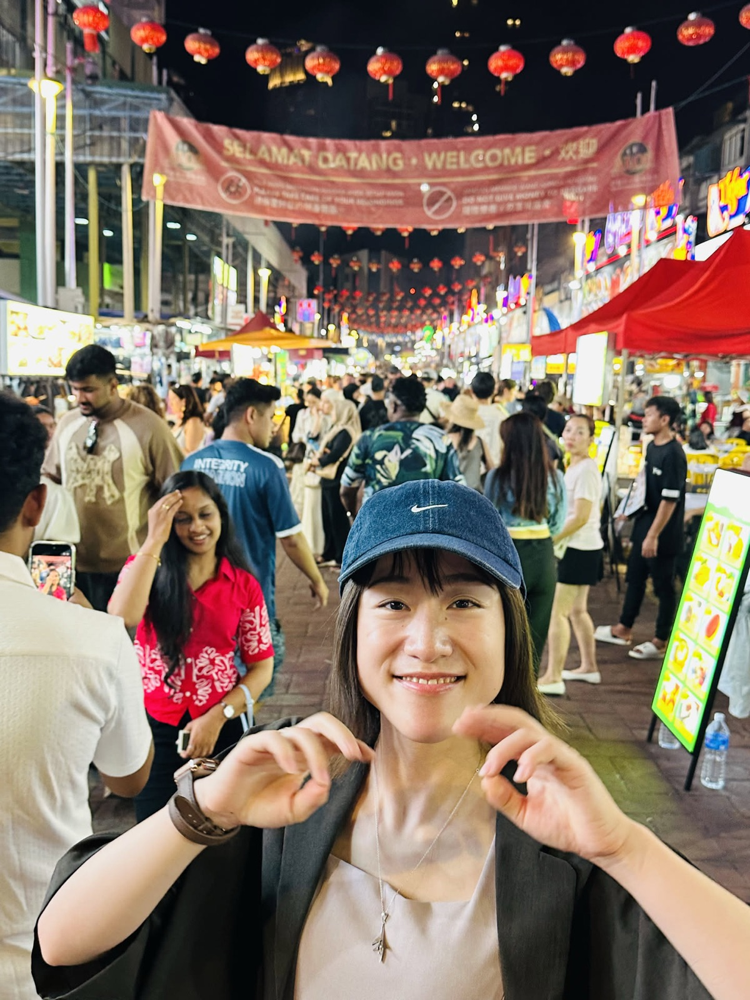
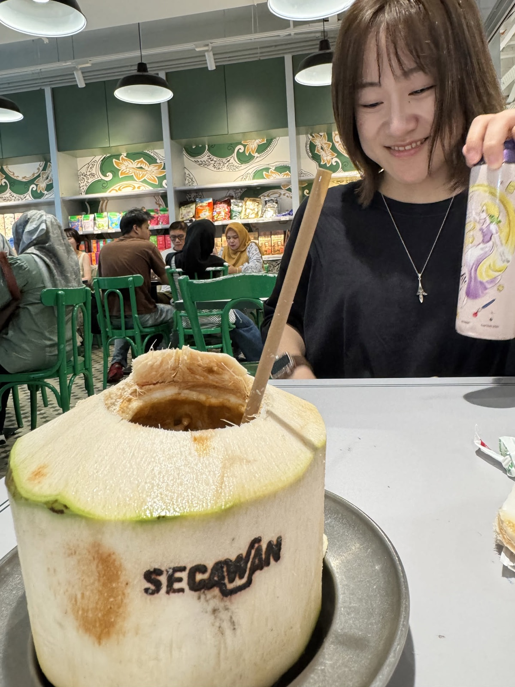
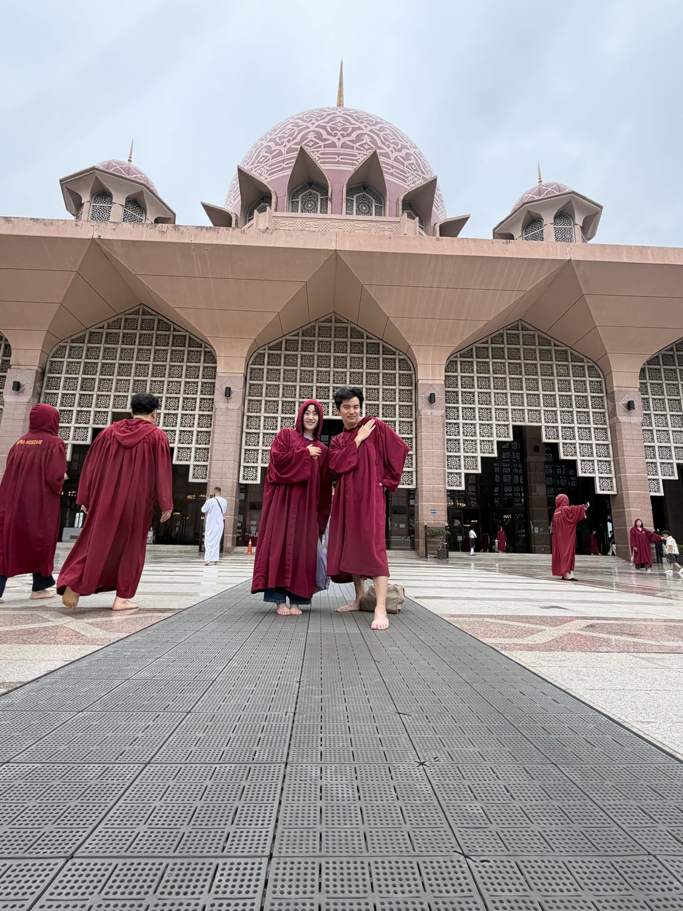
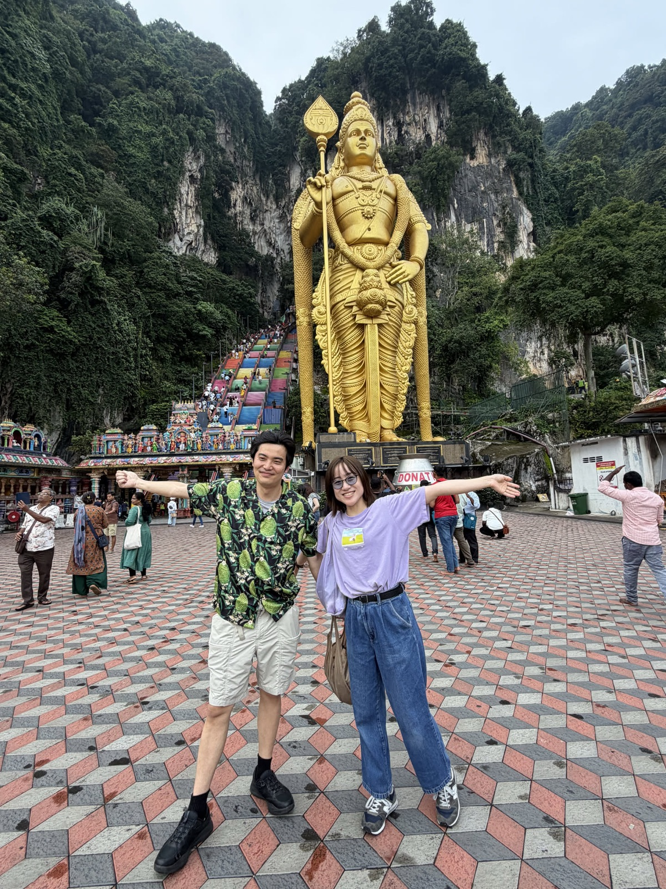
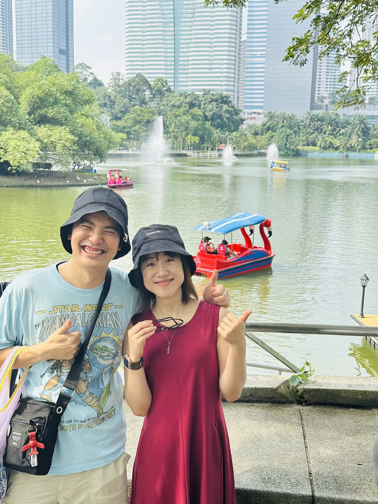

羽田を夜に出て、朝クアラルンプール。5日間。
下にスクロールで 9日 → 13日

7月8日の夜、羽田の第3ターミナルで待ち合わせて出発。朝6時にクアラルンプールへ着いた。泊まったのはブキッビンタンの18階の部屋。落ち着いてからモーニングを食べに出て、そのあとは街とモールを歩いた。暑いのでGrabもよく使った。

夕方にペトロナスツインタワーへ。展望フロアからは隣のタワーが真横に見えて、下を向くとモールと街がそのまま広がっていた。日が落ちるまで粘って、夜はKLCCの噴水も見た。

宿に戻る前に屋台の通りへ。赤い提灯がずっと続いていて、目印は偽物のミッキーがいる屋台だった。途中にドリアンの屋台も並んでいて、でっかいプリンも食べた。

この日は中華街の市場へ。セントラルマーケットの雑貨と古着をひやかして、屋根のあるアーケードをずっと歩いた。暑いのでココナッツをそのまま切ったジュースで休憩。夜はマスジット・ジャメの方まで出た。

1日でモスクを2つ。まず南のプトラジャヤのピンクのモスク、そこから西へ走ってシャアラムのブルーモスク。どちらも入口でローブを借りる。ブルーモスクでは地元の女の子たちと写真を撮った。

モスクのあと、そのまま北のバトゥ洞窟へ。金色の大きな像の後ろに虹色の階段があって、のぼりきると洞窟の天井に穴が開いている。着いたのは夕方で、人も少なかった。

12日は湖のある公園へ。ボートが浮いていて、滝のところで写真を撮って、犬にも会った。午後はムルデカ広場で、時計塔のある建物を背にもう一度。13日は郊外に出てから空港へ向かい、14日の朝に日本へ戻った。
ゆり「5日間一緒にいて、私はよかったな〜って感じでした」。佑樹は「1〜2週間くらいがちょうどいい」と答えた。
写真: 2026年7月9日〜13日に2人で撮ったもの。日付と場所は写真の撮影日時とGPS、予定はLINEのやりとりから。